Finite Volume Approach
Created Dienstag 08 März 2016
This chapter explains the derivation of the conservation equations from the general form of the consevation equations by the finite volume approach. The resulting equations are implemented in Modelica code in the ClaRa components.
The finite volume approach is a widely used method in order to discretize physics laws in differential form, such that they can be implemented on a computer and numerically solved.
1 General Integral Form of Conservation Laws
In the finite volume approach the integral form (1) of an according conservation law is taken:
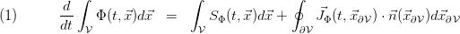
In what follows we will always consider control volumes, which are independent of time.
2 Idea of Finite Volume Approach
The basic idea is to replace the density 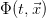 by its average:
 . This is equivalent to assuming as constant over and justified if varies moderately inside .
. This is equivalent to assuming as constant over and justified if varies moderately inside . The same is done for the source density 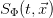. Furthermore, we introduce the flows
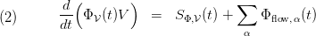
In all ClaRa models the flows 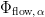 will effectively be connector flows or flows between neighboured control volumes.
Controversy on the Approach:
A great advantage of the finite volume approach is that it is inherent conservative: by construction conservation laws are respected.
One disadvantage of the finite volume approach is the neglect of finite propagation times (e.g. temperature steps in mass flows, pressure shocks). Due to the averaging process, we loose spatially resolved information: We assume physical quantities such as temperature to be constant over the control volume. This means for example, that a temperature step in the incoming mass flows has an immediate effect on the temperature throughout the whole control volume. Outgoing mass flows will immediately notice a temperature change as well. Sometimes this may lead to oscillatory behaviour (chattering) of numerical solutions, e.g. if the medium state inside a control volume is close to the two-phase-region. Another side-effect is the 'washing out' of steep steps, due to the mixing inside the control volume. For example, a steep increase of temperature in the incoming mass flows will manifest itself in an immediately starting but less steep temperature change of the outgoing mass flows. This effect is called numerical diffusion.
Spatial Information and Geometry
In order to re-establish spatial resolution in a finite volume based model one needs to arrange several control volumes according to the underlying geometry of the system. Such a spatial arrangement of cells is called a grid.
The individual value of a conserved quantity is then assumed to be located at the centre (e.g. centre of mass) of each individual control volume of the grid. Depending on the relative locations of the cell centres, a zero dimensional (one cell only), one dimensional, two dimensional or three dimensional grid can be built, as shown in the figure below..
ClaRa Application
Within ClaRa, the finite volume approach is widely used, in order to ensure closed mass and energy and momentum balances, as this is the crucial aspect for the analysis and evaluation of dynamic processes in power plants. If needed spatially resolved information will be provided by grids, which are adapted such that the crucial physical properties of a particular component can be captured. There can be different levels of detail for a particular component or system model. See A User Guide:GettingStarted:Model Design Principles
3 Generic Control Volumes
As shown in the general chapter on conservation laws, we can specify 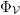 in equation (2) in order to obtain all relevant balance equations
- by setting to the mass density 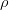 one obtains mass conservation
- by setting to the inner energy density 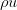 (u being the specific inner energy) one obtains energy conservation
- by setting to 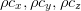 one obtains momentum conservation in (x,y,z) - direction respectively
In what follows we will write down the generic balance equations for the finite volume approach.
3.1 Mass Balance
3.1.1 Single Component
Introducing the mass flows , where represents elements of a partition of 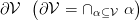 we can write (2) as
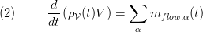
The mass flows can be caused either by convection or by diffusion (compare to Conservation Laws eqn (6) ).
Here we neglect internal mass flow sources.
In ClaRa models equation (2) is used in order to define the time derivative for pressure according to (compare to Conservation Laws eqn(12)).
Usually the pressure is taken as a state instead of the density.
3.1.2 Species Balance for Multi Component Media
If the medium is a mixture consisting of components, a mass balance for each species has to be solved. However in practical applications it is more instructive to introduce mass fractions 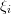 (i=1... ) of each substance (we leave out the in the subscript):
) of each substance (we leave out the in the subscript):
By definition of the mass fractions we have the constraint
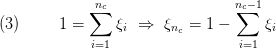
Instead of constituent mass balances we can then write up  species balance equations and one total mass balance:
species balance equations and one total mass balance:

Here we have neglected all processes that change the mass fractions inside the control volume, e.g. chemical reactions.
Using (2) for each component ( ) and the total medium we finally arrive at
) and the total medium we finally arrive at

Notice again that by (3) we only have 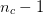 time derivatives. In ClaRa we follow the convention that 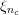 is dependent variable. It is computed according to (3).
In the presence of a multi-component medium Conservation Laws eqn(12) will obtain additional terms:
3.3 Energy Balance
Introducing the inner energy 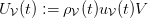and the energy flows we may write
 denotes the temperature inside the control volume, 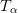 denotes the according temperature at the surface
denotes the temperature inside the control volume, 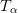 denotes the according temperature at the surface  ) or convective enthalpy flows denoted by 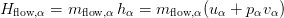 (compare to Conservation Laws eqn (6) ).
) or convective enthalpy flows denoted by 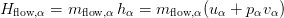 (compare to Conservation Laws eqn (6) ). The latter can be understood as follows: fluid entering / leaving the control volume contributes inner energy 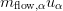. Additionally mechanical work has to be performed in order to inject / extract fluid from the control volume. This mechanical work (in German: "Einschubarbeit") contributes to the inner energy of the fluid inside the control volume and is accounted for by the term 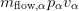 (
 denotes the specific volume of the injected/extracted fluid).
denotes the specific volume of the injected/extracted fluid). For this reason enthalpy flows enter the energy balances in the ClaRa fluid models.
Therefore the energy balance takes the form
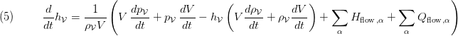
Here we neglect internal energy sources.
3.4 Momentum Balance
In order to evaluate the momentum balance for the so far unspecified control volume we
introduce the momentum in - direction 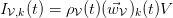 and the according k'th component 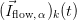 of the momentum flows 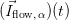.
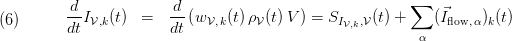
Since the shape of is not specified, additional information on the connector location as well as on possible pressure loss models are required. These information are provided using replaceable geometry models. Notice that momentum flows describe forces acting on the control volume. Usually we have
- Forces due to friction caused by velocity gradients and the viscosity of the medium
- Forces due to pressure
- Forces due to convection (sometimes also referred to as advection)
- Internal gravitational source
4 Examples for Specific Dimensions and Shapes
4.2 Generic 0-D Control Volume
Think of a single control volume. Assume we only have a mass flow in positive x-direction (from West to East co-linear to the according surface normals. We have to specify the flow cross-sectional areas (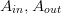) as shown in the left figure below. We are flexible in choosing thee shape of the cross sectional areas . Beside quadratic it could for example be circular. In the latter case the volume  is a cylinder as shown in the second figure below.
is a cylinder as shown in the second figure below.
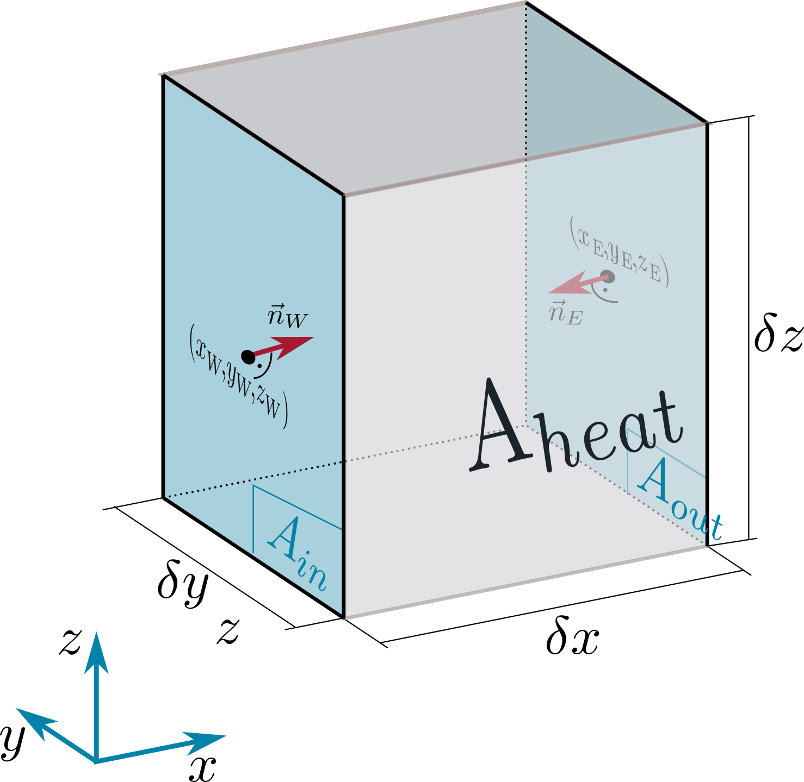 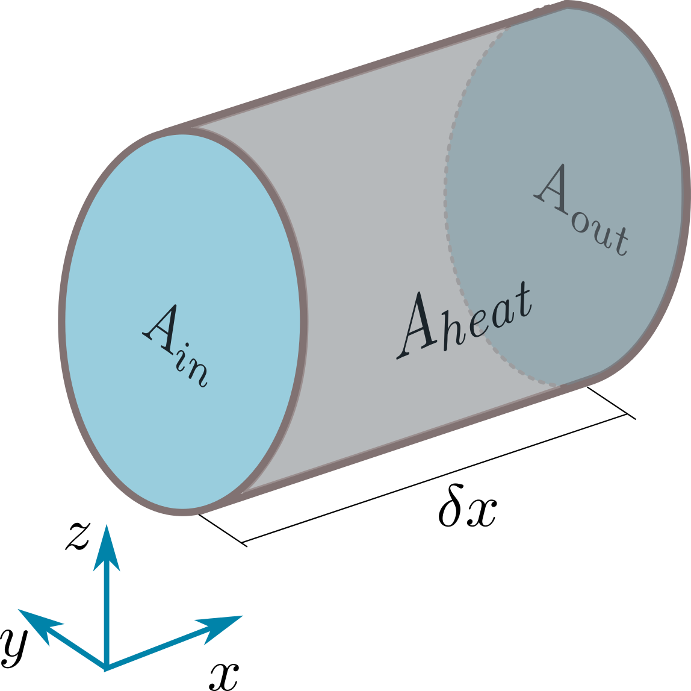
In the sequel we will denote the "wall surface" by 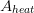 and the cross sectional areas by  . We can abstract this situation as follows.
. We can abstract this situation as follows.
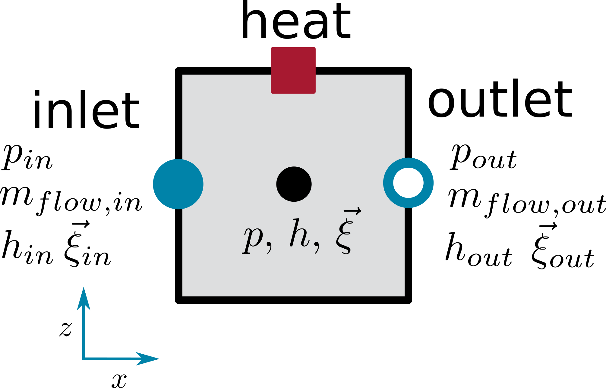
We have an inlet and outlet to the control volume, indicated by the two icons of the according ClaRa fluid connectors. The heat transfer through the outer surface of the control volume is indicated by the presence of a heat port. Together with a suitable heat transfer model the heat flows are computed.
Then we obtain for the balance equations:
Mass Balance
Species Balance

Energy Balance
Momentum Balance
Gravitational pressure difference  will be computed from the z-position of inlet and outlet. Pressure difference due to friction
will be computed from the z-position of inlet and outlet. Pressure difference due to friction  has to be computed from a pressure loss model. Pressure difference due to convection
has to be computed from a pressure loss model. Pressure difference due to convection  is computed from the momentum carried by the mass flows at inlet and outlet.
is computed from the momentum carried by the mass flows at inlet and outlet.
If a steady state momentum balance is used then
4.2 Different Shapes for Arrangement of 1D Pipe Flow
In many situations (e.g. pipe models) it is reasonable to simplify models by restricting to 1 dimensional mass flows.
Then a 1-dimensional spatially discretized pipe flow can be modelled by control volumes. The cross sectional areas are then denoted by . Each control volume now carries a label 1,2,3,..., .
This leads to a the following 1-dimensional discretization scheme, where we have introduced a labelling by .

In the figure above each control volume is given similar to the 0-dimensional case.
Mass Balance

Species Balance

Energy Balance
Notice that we have mass flows and state locations shifted by a half cell. This implies that we have to work effectively with a double resolution grid, as can be seen in the balance equations. Therefore we have introduced the formal  in the labelling.
in the labelling.
When working with a double resolution grid in the Modelica code it is necessary to introduce a second label  where even label energy state locations and odd label mass flow locations, as can be seen from the figure above.
where even label energy state locations and odd label mass flow locations, as can be seen from the figure above.
This implies that  need to be interpolated at odd and mass flows / velocities need to be interpolated at even .
need to be interpolated at odd and mass flows / velocities need to be interpolated at even .
Momentum Balance
The necessity of working with a double resolution grid becomes more clear, if we take a look at the momentum balance:
The momentum states are located at the mass flow locations at the border between two energy cells. Hence we need to introduce momentum control volumes that are shifted by a half cell from the energy cells. This is sometimes called a staggered grid in the literature [1,2]. The situation can be seen in the following figure, where we have introduced the flow grid and add subscripts "FM" to quantities of the flow model.

Notice that we have used the definition of the volume of a flow model cell as
 , so the flow cross sectional area has cancelled here.
, so the flow cross sectional area has cancelled here.Gravitational pressure difference
will be computed from the z-position of the flow cell boundaries. Pressure difference due to friction has to be computed from a pressure loss model (see Basic Concepts of Modelling:Pressure Loss L4 Volumes). Pressure difference due to convection is computed from the momentum carried by the mass flows at the flow cell boundaries.
If (close to) steady flows have to be modelled, a steady state momentum balance can be sufficient. Then we have
 .
.
In the steady case it is not mandatory to use the staggered grid, since the momentum is computed directly from the pressure loss model.
Application of these concepts can be found at Basics:ControlVolumes:FluidVolumes:VolumeVLE L4 Advanced .
4.3 Cylindric Shell Shape for Arrangement of 1D Heat Flow Through Thick Walls
Another example for the usage of the finite volume approach can be found at Basics:ControlVolumes:SolidVolumes:CylindricalThickWall L4 .
References
[1] S.V. Patankar, "Numerical Heat Transfer and Fluid Flow", Hemisphere Publishing Corporation, 1980.
[2] H.K. Versteeg and W. Malalasekera, "An introduction to computational fluid dynamics, The finite volume method", Longman Scientific & Technical, 1995
Version History
Date - Version - Description of changes - author/reviser
30.04.2014 - v0.1 - initial implementation - Johannes Brunnemann, XRG Simulation
03.02.2017 - v1.2.0 - extensions - Johannes Brunnemann, XRG Simulation
Backlinks: ClaRa:Basics:ControlVolumes:FluidVolumes:VolumeVLE L4 Advanced